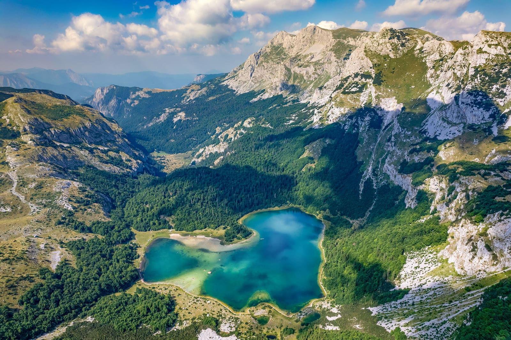

Activities
Hiking, nature and exploration
What awaits you
Hiking
Explore beautiful mountain trails through untouched forests and meadows with spectacular views over the Tara canyon.
Nature walks
Short walks suitable for all ages — discover the rich flora and fauna of this UNESCO-protected area.
Waterfalls
Visit hidden waterfalls in the canyon — natural wonders reached by scenic forest paths.
Viewpoints
Take in panoramic views from lookouts above the canyon — a perfect photo opportunity.
Nearby attractions
- Tara River Canyon — Europe's deepest canyon (1,300 m)
- Đurđevića Tara Bridge — an iconic bridge built in 1940
- Durmitor National Park (UNESCO)
- Black Lake — “Eyes of the Mountain”
- Perućica — one of Europe's last primeval forests
